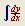
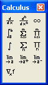

Calculus Toolbar |
You can use calculus operators to evaluate expressions numerically or analytically. Click on the  button in the Math toolbar to bring up the Calculus toolbar, or choose Toolbars > Calculus from the View menu.

| Calculus Operators |
The Jacobian function Jacob is an extension of the gradient operator.
Buttons on the Calculus toolbar insert Calculus-related operators. You can also type any operator using its keystroke. Note that the indefinite integral and limits are only available symbolically. You may also wish to use the vector summation operator to perform sums.
| Tooltips |
To learn what a button does, hover the cursor over the button until a tooltip shows the title and a description appears on the message line of the Status Bar.
Note that the tooltips are only documented for US keyboards. The Mathcad Keyboard Shortcuts page may show the shortcuts for your language keyboard.